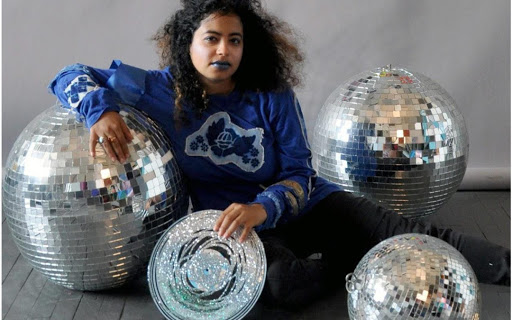
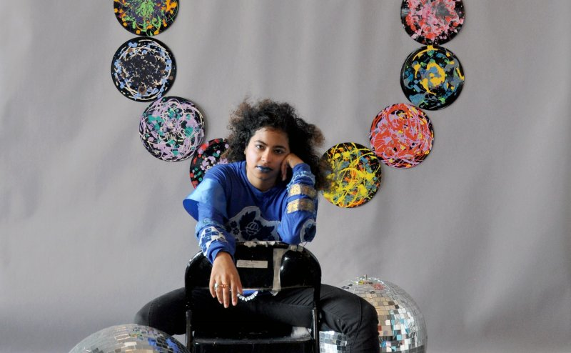

Hiba Ali is a digital artist, educator, scholar, DJ, experimental music producer and curator based across Chicago, IL, Austin, TX, and Toronto, ON. Their performances and videos concern surveillance, women of color, and labor. She studies Indian Ocean geographies through music, cloth and ritual. They conduct reading groups addressing digital media and workshops with open-source technology. She is a PhD candidate in Cultural Studies at Queens University, Kingston, Canada. They have presented their work in Chicago, Stockholm, Toronto, New York, Istanbul, São Paulo, Detroit, Dubai, Austin, Vancouver, and Portland. She has written for THE SEEN Magazine, Newcity Chicago, Art Dubai, The State, VAM Magazine, ZORA: Medium, RTV Magazine, and Topical Cream Magazine.
A conversation with Annie Bielski
July 13, 2020
Much of your work in writing, music, video, and performance considers the intersections of Black and brown womxn’s labor and surveillance. With this in mind, how do you approach digital spaces?
I think about the internet now as a space that was already colonized and under surveillance. The internet is a mechanism of control. This is related to its history of how it started and it’s the way it’s being used now. It’s also a place
where
Black and brown womxn’s labor goes unseen. We can take Instagram as an example, where if you were an activist or simply speaking out against injustice, your account would get shadowbanned. The algorithm is predetermining what is good and what
the platform wants you to see. We see this played out in the work of Ruha Benjamin and Safiya Umoja Noble, who has written Algorithms of Oppression, as well as Lisa Nakamura’s work.
If I choose to have Instagram as a platform where my work lives, then those are the parameters which I’m entering into. I’ve seen a lot of folks get on Signal, and a friend of mine pointed out that while it is a secure encryption application,
Signal runs on the data servers of AWS, Amazon Web Services. So when we think about the idea of “secure,” it’s always being mitigated by which servers are hosting our information and how much control and lack of control we have over those
things. It’s always about seeking out better spaces and demanding them. That’s the only way the internet is going to change, if we demand it. Those are the concerns I keep in mind when I’m creating digital spaces.
You worked at an Amazon fulfillment center in between grad programs as part research and part necessity. You’ve written and made artwork about the experience, using humor as a tool of critique toward the exploitative working
conditions,
the corporation’s obsession with worker productivity, and your undervalued labor. How do you think about humor?
My work uses humor or sarcasm as a critical practice against systems of control and domination because I think that humor is a really powerful way to take what is normal or what is normalized and shift the focus to the structures that make it
normal. The reality of working at a warehouse where you’re grossly underpaid and everyone is worked to the bone in this way is beyond absurd. When I use humor I’m thinking about, “Wow, this reality is so messed up. How can I point at the fact
that this reality was constructed to be messed up, constructed to be absurd?” For me, humor is a critical edge to point at the specific structure that’s normalizing these conditions. Poverty should not be normalized, abuse should not be
normalized. I’m not gesturing at utopia or anything, but there are structural things that we can do in society that don’t reproduce poverty, that don’t reproduce abuse, that don’t reproduce capitalist modes of living that reproduce hurt.
Thinking about the obsession with productivity embedded within the capitalist model, I feel I’m constantly critiquing and reframing what productive means for me in my art making. How do you think about productivity in your art and
academic work?
As artists, as people who, again, produce art, or academics who produce critical thinking, we’re constantly being asked to make a new project, write a new paragraph, constantly produce. While a bit of that is part of the industry, I think
it’s
also about stepping away from the idea of productivity and reframing what that is because I think not working is productive. I think not doing things is productive. It takes so much mental, emotional, intellectual labor to keep making things.
When we realize that there’s a layered type of labor that is occurring to create what we do, I think there’s lots of exhaustion in that and burnout in that.
When I find myself doing a lot of things because I have to, I hold myself really strictly to a time where I’m not doing anything. If I’m doing this stuff this week, next week is about not doing anything. Next week is about me doing my hobbies
or hanging out just to relax or reconnect with my body. It’s really important for me to reframe what productivity is. How do we center the limits of our body, the limits of our mind? There’s a limit to how much we can hold, whether it’s work,
mental health stuff, pain, or whatever. Knowing those limits is really helpful. I can’t take care of my body if I’m pouring all of myself into my work. Having pre-existing conditions, connections with my friends—if i pour myself into my work
completely, I can’t maintain those.
So I step away, recenter, and reframe what this is going to be. You know, productivity at times doesn’t feel like the right word either. It feels like work. I’m like, “This is work. How do I center myself in this work? Do I need to work
slower?
Do I need someone to help me? Do I need a break? Should I get up from this work area and go for a walk?” It’s helpful to interrupt this workaholic mindset that’s, again, so normalized as part of the industry and the larger American mindset.
I’ve worked for Subway, Ikea, Long John Silvers—those are my adolescent jobs. I’ve worked as a work-study in undergrad, and I watched my mother work in industries of care when I was young and I was raising my siblings. Growing up poor and
working class, the idea of work was ingrained as being “we’re working class but also immigrants…you have to work to live” and “you can never work enough.” Working all the time is something that was normalized growing up and even more so now.
Because of the environment I grew up in and the way that I’ve normalized this idea of working all the time, I need to really assess what work means to me right now and really practice healthy mindfulness. If I can’t get this big vision or
whatever done by the deadline, maybe I need to reframe whatever this project is. Maybe it shouldn’t be about stressing myself out. When it comes to moments like this, I have to put my health first, before anything else, because the way that
work is designed is for us to lose ourselves in it.

You’ve said that in your performance, your body acts as a site of resistance against the mechanisms that makes your labor invisible.
Women generally make up a lot of the caregiving industry—customer service, nurses, the cleaning sector, all of the above. Predominantly, womxn of color work in these industries for white or white-adjacent clientele. Instead of being paid
adequately, their labor is taken for granted and they’re underpaid because these jobs in themselves are like, “Oh, this is menial labor work or this takes not much of your brain,” or whatever—that’s the kind of bias against womxn of color in
these spaces. I think about caregiving and caregiving industries that don’t account for all the emotional and intellectual labor that is required of working in these industries. Instead of seriously protecting workers in the caregiving
industry
and especially protecting the rights of workers in these industries, a lot more money is paid to predominantly white and male tech and engineering industries.
The current regime with capitalism prizes innovation and new technology and new AI over these other caregiving industries, so there’s already a bias as to how people are being paid and how much. Even within these tech and engineering
industries, womxn were the earliest workers in these spaces. A lot of this history goes unaccounted for.
The work of raising children, cleaning, and customer service are feminized and don’t receive protection and care. These jobs should be highly paid and workers highly protected. We see this in regards to so-called essential workers right now,
where essential is just a polite word for disposable. This reminds me that Black and brown womxn’s labor has been pretty much disposable for a really long time, linked to histories of Transatlantic slave trade as well as the Indian Ocean
slave
trade. That’s why in my work and my videos, when I do use my body it’s to make all of this labor visible. So much of it historically has been under-recognized and also, in the most contemporary sense, not seen.
What is your process around researching and writing about a topic and making artwork about a topic? Does it happen at the same time, or does one usually precede the other?
It depends on what I’m doing. I worked [at an Amazon fulfillment center] in-between grad programs and I knew I was going to do something [with that experience], but I didn’t know what because I was currently living the experience and I
couldn’t
have distance from it until it was over with. I think maybe after a year or six months, I ended up writing a lot about my time, and from that writing and journaling, I developed a script, then it turned into a video.
While I do write articles and things of that nature, I do a lot of not “academic” writing, in the sense that I write scripts or poetry to describe a lot of the work that I end up making. I think about the ways in which academia is also
inaccessible, because of the exorbitant fees and the impending debt, and the student debt crisis that’s been happening. It can be a place of learning and growth as it has been for me, especially in my undergrad years, but also is a space
that’s
not been accessible to all. I think about, “Well, what does it mean to share information? How can I share information that’s related to my work and doesn’t solely exist in the gallery space or the academic space?” My work is made with
community
in mind.
With the Amazonification dissertation, I am thinking about people I worked with, connecting with labor organizers in both the US and Canada. With the work I’m doing around the Indian Ocean, I’m connecting with other artists and scholars in
these spaces and thinking about my connection to our ancestors. When it comes to approaching these laws or ideas, I know I’m not going to get there in a day, in a week. It’ll take many years time and so, for me, [creating] a reading list, and
letting these projects kind of flow and not pre-determining their outcome becomes a more accessible way to share my research along the way, as a public-facing element but also a way for me to chart the growth of the work and where the past is
leading me. Reading something, learning something around conversation informs the work so it’s not purely coming from an academic space. It’s coming from a space where I’m engaging with people, engaging with community.
When I switch modes, subjects, and themes, it also activates a slightly different part of my brain and a different side of my interests. I think it’s helpful because you can train your senses to think about different ways in which the project
exists. It just depends on what I’m working and what idea makes sense. I go by intuition. It’s not purely a research-based or mathematics sort of thing.

What experiences have influenced the music you make?
As someone who started out in video, I have to constantly think, “What’s the background music going to be like? What’s the score going to be? How is the audio going to affect my video?” I’ve been doing musical things for a while, not
realizing
that that’s what I was doing. In the past few years, I was like, “Oh, I’m actually a musician.” My earlier mixes were more linked to the queer club culture that I grew up in in Chicago, and that’s an important part of the root.
Over the past few years, I’ve turned towards Sufism and mysticism in my work, calling up and thinking about music as a way to connect to ancestors and other spiritual realms. I’ve found that a lot of my work has this sort of haunting theme
and
I was like, “Hmm, why do I end up going towards this specific sort of route?” I did some research on Sufi music and the idea of connecting to the past through music and realized, “Oh, haunting is not the right word. It’s more like a longing
for
spirituality. It’s a longing that can sound this way, can sound haunting but it isn’t and it’s drawing on the past to think about the future.” In the past year or so I’ve gotten more interested in that. A lot of my musical ideas come from
intuition and it’s really an exciting space to be in. Most recently, I released a mix for Sparkle Nation where through thinking about the Arabic scale, which is called the maqam, I linked music found in South Asia, qawwali, which is Sufi
spiritual music, with taarab, which is a music genre in the Swahili Coast of East Africa. I’m also thinking about music in a way that connects beyond borders and also links back to my family’s history in the Indian Ocean region. That’s where
my
music practice is going.
What has making your work taught you about yourself?
It’s taught me that I can do a lot and I’m always learning. I’m never going to be in that place of having all the knowledge. I’m always going to be learning and growing and it’s going to happen with community and in relation to everyone else.
I
think that’s the healthiest place to be, mentally and spiritually, and that’s where I draw my intellectual or artistic strength from.
What questions are on your mind right now?
I’ve been paying attention to a lot of the abolition work that was founded by scholars like Mariame Kaba, Ruth Wilson Gilmore, and many other important people. I am fiercely hoping for change and being a part of that and pushing that forward.
A
lot of my questions are about thinking about the future right now. I feel like we’re on a precipice. A lot of my energy is thinking about that and how to be part of systems that don’t reproduce harm. I’m an educator, too, so it’s also
considering that I’m going to be teaching students behind the screen, so how do I help connect students more to their values and their environment in a screen-based learning environment? A lot of my questions are about the current status of
life because we are going through a big paradigm shift and it’s hard to predict or anticipate what the larger ramifications are going to be.
Hiba Ali Recommends: